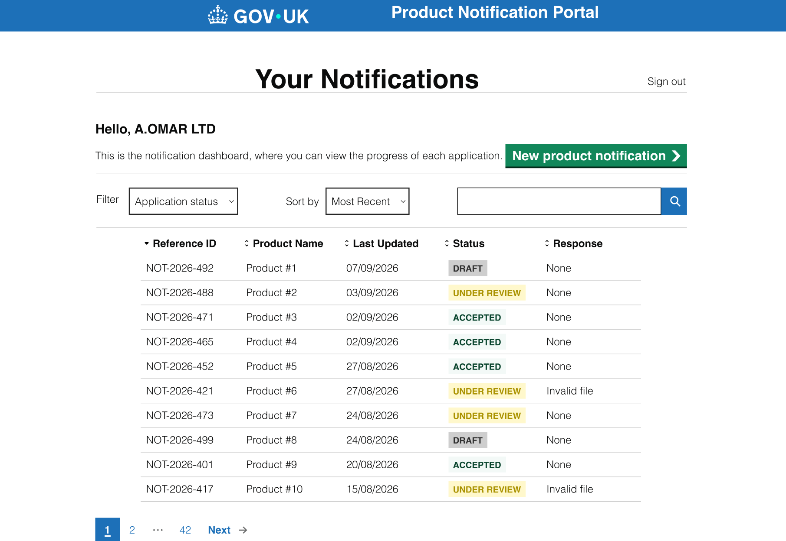
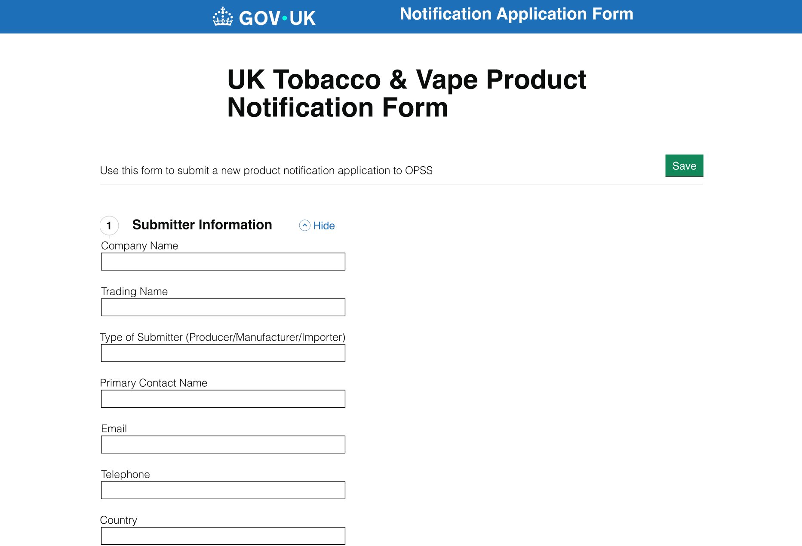

Product Notification
A notification system connecting external submitters with internal OPSS reviewers.

Overview
Problem
The product notification suffers from a disjointed workflow between external applicants and internal reviewers. Because the system lacks a unified memory, real-time validation and transparency tracking, it creates a heavy administrative bottleneck: external users face high error risks and redundant entry with no clear way of tracking the progress of the application, while internal officers waste time on manual checks and back-and-forth emails instead of spending that time evaluating applications.
Solution
- An automated pre-submission validation to reduce submission error.
- Real-time dashboard queue to track progression.
- In-system amendment tools to improve transparency in communications.
- Authenticated account profiles to automatically pre-fill static data.
Impact
External users can efficiently submit notifications with reduced error, track the submission progress in bulk and save time repeatedly inputting the same static data. Internal reviewers spend less time chasing missing fields, more time evaluating product safety and are able to communicate more efficiently through in-system amendment tools.
Process
Research
Using transcripts provided to me from internal OPSS officers and external businesses, both big and small, I was able to gauge their thoughts, opinion, the current process and what they would like to be changed / implemented.
With this, I was able to come up with my problem statement:
External submitters and internal OPSS Regulatory Officers are constrained by an unguided, email-based notification system that lacks user authentication, real-time data validation and status tracking when submitting. This is a problem because external submitters unknowingly submit incomplete or improperly formatted data and waste time re-entering static information. Consequently, internal OPSS officers spend crucial time manually validating submitted data through back-and-forth emails, resulting in operational delays.
Ideation
Utilising the research insight, I was able to understand the core user needs and use How Might We Questions.
Core user needs
- OPSS Officers needed pre-validated submissions to focus on evaluation rather than chasing missing fields via email.
- Enterprise Managers required profile-tied static data to auto-fill across mass filings.
- Small Business Owners needed real-time error indicators and checklists to submit with confidence.
- Junior Staff needed contextual guidance summaries embedded directly alongside data entry fields.
How might we
- How might we eliminate the need for users to repeatedly re-enter static data across multiple submissions?
- How might we reduce missing, incomplete, or duplicated information when submitting notifications?
- How might we make submission statuses transparent so users don't need to chase updates via email?
- How might we keep relevant guidelines and regulations within reach during data entry?
Design
Using the Government Design System (GDS), I created separate dashboards for both internal reviewers and external submitters, while also completely revamping the notification submission to be clearer, easier to progress through and reduce error when submitting data through an automated system. Those submitting are also able to view at what stage of the submission they are currently at, alongside being able to draft incomplete notifications to edit and submit them later.
Testing
I came up with a usability testing plan, where the objective was to evaluate the success of the prototype based on task completion efficiency. This testing utilised qualitative insights to identify whether the navigation and functions implemented in the prototype reduce the error rate and lower the cognitive burden when submitting a notification.
This study recruited 3 participants, conducted on a Teams call. The KPIs included: the speed it takes to complete tasks, efficiency of the navigation, and the cognitive load through navigating the prototype, which will serve as the metrics for design success.
For the qualitative assessment, I conducted a Think-Aloud protocol. Participants were asked to express their immediate thoughts as they navigate around the prototype. The test will be structured around this scenario:
As a new staff member for a Vape & Tobacco Product Importer, you are tasked to file a notification submission for the newest product.
Final Design

